Тема
13. РАСПОЗНАВАНИЕ
ОБЪЕКТОВ НА КАРТАХ И ИЗОБРАЖЕНИЯХ ЗЕМНОЙ ПОВЕРХНОСТИ
13.1. Выделение
точечных, линейных и площадных объектов на геоизображениях.
Различные объекты на картах и изображениях представляют
собой разрывы яркости. Наиболее общим способом поиска разрывов является
обработка изображения с помощью скользящей маски. Для показанной на Рис. 13.1
маски размерами 3x3 элемента эта
процедура основана на вычислении линейной комбинации коэффициентов маски со
значениями яркости элементов изображения, покрываемых маской. Иначе говоря, при
использовании этой маски отклик в каждой точке изображения задается выражением
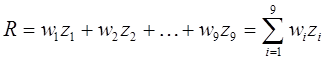 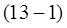
где 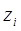 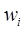
|
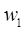 |
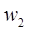 |
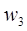 |
|
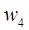 |
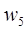 |
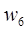 |
|
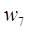 |
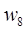 |
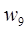 |
Рис. 13.1. Скользящая маска.
В принципе, обнаружение отдельных изолированных точек на
изображении не представляет сложности. Воспользуемся маской, и будем считать,
что в том пикселе, куда попадает центр маски, обнаружена точка, если
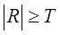 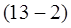
где Т — неотрицательный
порог, a R вычисляется в
соответствии с (13-1). Посуществу, в данной формуле измеряется взвешенная сумма
разностей значений центрального элемента и его соседей.
|
-1 |
-1 |
-1 |
|
-1 |
8 |
-1 |
|
-1 |
-1 |
-1 |
Рис. 13.2. Скользящая маска для определения
точечных объектов.
Идея состоит в
том, что изолированная точка (т.е. расположенная в однородной или почти
однородной области точка, значение яркости которой существенно отличается от
окружающего фона) будет заметно отличаться по яркости от ближайших соседей, а
значит, будет легко обнаруживаться с помощью маски приведенного вида. В данном
случае цель состоит исключительно в обнаружении отдельных точек, поэтому
интерес представляют только достаточно большие различия (определяемые порогом 7),
при которых точка может считаться изолированной. Обратите внимание, что сумма
коэффициентов маски равна нулю, так что на областях постоянной яркости она будет
давать нулевой отклик.
Следующим по уровню сложности является обнаружение линий.
Рассмотрим набор масок, показанный на Рис. 13.3. При скольжении первой маски
по изображению, наиболее сильный отклик будет на горизонтальных линиях толщиной
в один пиксель; причем, если яркость фона одинакова, то отклик будет
максимальным, когда линия проходит горизонтально через центр маски. Это легко
проверить на простом примере однородного поля со значениями элементов равными
1, содержащего горизонтальную линию из элементов с отличающимся значением
яркости (скажем, 5). Аналогичные эксперименты подтвердят, что вторая маска на
Рис. 10.3 дает наибольший отклик на линиях, проходящих под углом +45°; третья —
на вертикальных линиях; четвертая — на проходящих под углом -45°. Эти
направления можно выявить и по тому признаку, что предпочтительные направления
каждой из масок характеризуются большими значениями весовых коэффициентов (а
именно, 2), чем любые другие направления. Обратите внимание, что сумма
коэффициентовкаждой маски равна нулю, так что они будут давать нулевой отклик
на областях постоянной яркости.
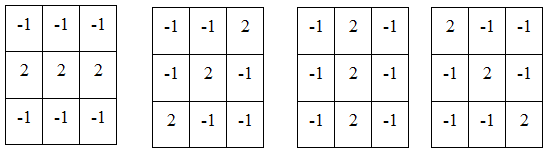
Рис. 13.3. Маски для обнаружения линий (горизонтальная,
+45*, вертикальная и -45* соответственно).
Обозначим через 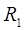 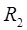 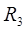 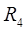 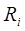 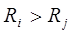 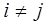 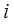 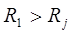 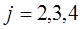
Площадные объекты выделяются
аналогично путём составления для них индивидуальных масок и последующим
анализом отклика на маску.
Задача
выделения любого из объектов представленных на изображении. Предполагается, что
каждый объект на изображении (препятствия, фон и дорожное покрытие) описывается
своими цветами – основной признак, по которому можно его классифицировать.
13.2. Распознавание движущихся объектов.
Задача обнаружения движения объектов крайне актуальна. На
данный момент разработаны алгоритмы и системы, позволяющие успешно решать эту
задачу. Однако эти алгоритмы ориентированы на работу с однородными по
разрешению двухмерными изображениями.
Рассмотрим основные ключевые моменты, которые необходимо
учитывать при выделении движения и сопровождении объектов.
Взаимосвязь
движения объектов и уровней яркости на изображениях.
На рис.13.4 показаны два изображения, имеющие
незначительные неочевидные отличия. Вычитание одного изображения из другого
позволяет получить изображение, которое «покажет» области отличий. На
разностном изображении объекты, которые изменили свое положение, становятся
светлей. При этом большая часть объектов, изменивших свое положение, остается
затемненной, что связано с малым пространственным изменением уровней яркости.
Следовательно, можно выделить движение только в частях изображения, которые
проявляют изменения уровней яркости. Обратное заключение, что все временные
изменения уровней яркости обусловлены движением, является неверным.
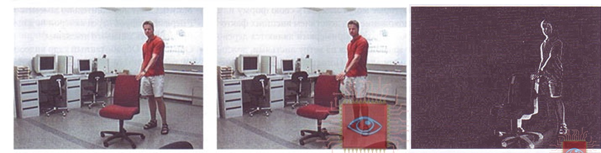
Рис. 13.4. Изменение уровней яркости,
обусловленные движением.
Апертурная
проблема.
Ранее мы показали, что оценка движения тесно связана с
пространственными и временными изменениями уровней яркости. Обе величины могут
легко быть получены с помощью локальных операторов, которые вычисляют
пространственные и временные производные. Такой оператор «видит» только
маленький сектор наблюдаемого объекта, равный размеру его маски. Мы можем
проиллюстрировать этот эффект наложением маски или апертуры на изображение.
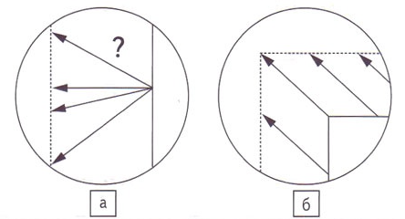
Рис. 13.5. Иллюстрация апертурной проблемы.
На рис. 13.5.а показан контур, который сдвинулся из
положения сплошной линии на первом изображении в положение пунктирной линии на
втором изображении. Движение от изображения 1 к изображению 2 можно описать
вектором перемещения, который для данного случая нельзя определить однозначно.
Точно можно определить только компоненту вектора перемещения по нормали к
контуру, в то время как компонента, параллельная контуру, остается неизвестной.
Эта неопределенность известна как апертурная проблема. Однозначное определение
вектора перемещения возможно, только если в обрабатываемой зоне объект имеет
углы.
Методы
обнаружения движущихся объектов
Типичный подход к обнаружению движения — это формирование
кадра фона и построение маски активности от разности фона и текущего кадра с ее
последующим просмотром с целью выделения движущихся объектов.
Метод
вычитания фона
Этот метод наиболее прост. Алгоритм сохраняет первый кадр
видеопоследовательности, а потом для каждого следующего кадра применяет порог к
модулю разности текущего и сохраненного изображения по каждому пикселю. Если |Bij-Iij|≥δ,i=0...w,j=0...h где w и h — ширина и высота изображения соответственно, то пиксель
[ij] считается переднеплановым, иначе он считается
за-днеплановым. Схема алгоритма
приведена на рис. 13.6.
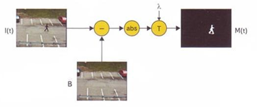
Рис. 13.6. Метод вычитания фона.
Изменяя параметр порога и параметры последующей
фильтрации, можно регулировать чувствительность алгоритма, то есть уровни этих
ошибок. Достоинства этого алгоритма — исключительная простота реализации и
высокая производительность. Однако данный алгоритм на практике практически не
применяется, что связано с рядом проблем:
• ухудшение качества обнаружения при снижении
контрастности объекта с фоном;
• низкое качество выделенного изображения объекта;
• высокие требования к стабильности фона и относительным
сдвигам «система - фон».
К нестабильностям фона, оказывающим сильное влияние на
результат вычислений, относятся такие изменения, как:
а) Изменения заднего плана. Возможны ситуации, когда при
формировании фонового изображения в него попадают объекты, которые в дальнейшем
могут изменить свое положение, например автомобиль (рис. 13.6).
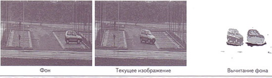
Рис. 13.7. Эффект изменения заднего
планаметода вычитания фона.
Подобная ситуация является большой проблемой для
изложенного алгоритма вычитания фона. Дело в том, что после того как машина
уедет, камере откроется часть сцены, которую машина собой загораживала. Эта
часть сцены в общем случае будет иметь цвет, отличный от цвета машины, и, таким
образом, будет восприниматься алгоритмом как передний план.
б)Изменение освещения. Эти изменения практически
полностью меняют цветовые характеристики сцены. В итоге из-за сильного
изменения освещения алгоритм будет сегментировать в передний план большую часть
сцены, что, разумеется, совершенно неприемлемо.
в) Динамический задний план. Достаточно часто в зоне
наблюдения находятся объекты, которые могут изменять свою форму или положение
под действием внешних факторов. Яркими примерами являются дерево с качающимися
на ветру листьями, дождь, снегопад и т.д. Попытка использования метода
вычитания фона к изображениям, содержащим динамические объекты, приводит к
неоднозначному результату (рис. 13.8).
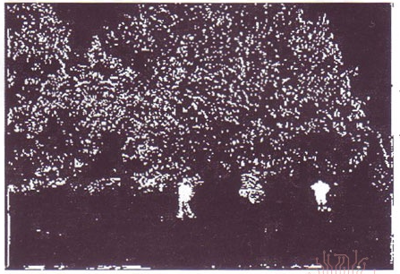
Рис. 13.8. Результат вычитаняи фона при
динамическом заднем плане.
г) Движущиеся тени. Падение тени на объект довольно
сильно меняет цвет объекта, и именно поэтому алгоритм вычитания фона
сталкивается с проблемой движущихся теней, классифицируя тени как передний
план.
Метод
усредненного фона.
Чтобы преодолеть недостатки метода вычитания фона, задний
план должен оцениваться и обновляться по времени. Часто фон моделируется
усреднением последовательности п кадров. Реализация метода включает следующие
этапы:
• Обучение. Первые n
кадров используются для обучения. По результатам накопления изображений за
выбранный промежуток времени определяется усредненный фон B(x,y,f). Стоит дополнительно заметить, что в первые п кадров
перед камерой не должно происходить никакого движения.
• Обработка. Обработанный кадр видеопоследовательности
получаем вычитанием усредненного фона B(x,y,t) из текущего кадра I(x,y,t).
Этот метод адаптирован к медленному изменению фона.
Изменение фона сглаживается эффектом усреднения. Точность алгоритма зависит от
скорости объектов и частоты кадров (рис 13.9). Кроме того, при постоянном
пороге хтя всех пикселей затруднено выделение нескольких объектов.
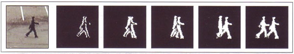
Рис. 13.9. Результат обнаружения метода
усредненного фона при уменьшении частоты кадров.
Дешифрирование аэроснимков, один из методов изучения
местности по её изображению, полученному посредством аэросъёмки. Заключается в
выявлении и распознавании заснятых объектов, установлении их качественных и
количественных характеристик, а также регистрации результатов в графической
(условными знаками), цифровой и текстовой формах. Дешифрирование имеет общие
черты, присущие методу в целом, и известные различия, обусловленные
особенностями отраслей науки и практики, в которых оно применяется наряду с др.
методами исследований.
Для получения аэроснимков с наилучшими для данного вида дешифрирования
информационными возможностями определяющее значение имеют учёт при
аэрофотографировании природных условий (облика ландшафтов, освещённости
местности), размерности и отражательной способности объектов, выбор масштаба,
технических средств (тип аэроплёнки и аэрофотоаппарата) и режимов аэросъёмки
(лётносъёмочные и фотолабораторные работы).
Эффективность дешифрирования, т. е. раскрытия
содержащейся в аэроснимках информации, определяется особенностями изучаемых
объектов и характером их передачи при аэросъёмке (дешифровочными признаками),
совершенством методики работы, оснащённостью приборами и свойствами
исполнителей дешифрирования. В ряду дешифровочных (демаскирующих) признаков
различают прямые и косвенные (нередко с выделением комплексных). К прямым признакам
относят: размеры, форму, тени собственные и падающие (иногда их считают
косвенным признаком), фототон или цвет и сложный признак — рисунок или
структуру изображения. К косвенным — указывающие на наличие или характеристику
объекта, хотя он и не получил непосредственного отображения на аэроснимке в
силу условий съёмки или местности. Например, растительность и микрорельеф
являются индикаторами при Д. задернованных почв.
В методическом отношении для дешифрирования характерно
сочетание полевых и камеральных работ, объём и последовательность которых
зависят от их назначения и изученности местности. Полевое дешифрирование
заключается в сплошном или выборочном обследовании территории с установлением
необходимых сведений при непосредственном изучении дешифрируемых объектов. На
труднодоступных территориях полевое дешифрирование осуществляют с применением
аэровизуальных наблюдений. Камеральное дешифрирование заключается в определении
объектов по их дешифровочным признакам на основе анализа аэроснимков с
использованием различных приборов, справочно-картографических материалов,
эталонов (полученных путём полевого дешифрирования «ключевых» участков) и
установленных по данному району географических взаимозависимостей объектов
(«ландшафтный метод»). Хотя камеральное дешифрирование значительно экономичнее
полевого, но его полностью не заменяет, т.к. некоторые данные могут быть
получены только в натуре.
Ведутся разработки по автоматизации дешифрирования в
направлениях:
а) отбора аэроснимков, обладающих нужной информацией, и
преобразования их с целью улучшения изображения изучаемых объектов, для чего
используются методы оптической, фотографической и электронной фильтрации,
голографии, лазерного сканирования и др.;
б) распознавания объектов сопоставлением при помощи ЭВМ
закодированных формы, размеров данного изображения и плотности фототона данного
изображения и эталонного, что может быть эффективным только при
стандартизованных условиях аэросъёмки и обработки снимков. В связи с этим
ближайшие перспективы автоматизации дешифрирования связывают с применением так
называемой многоканальной аэросъёмки, позволяющей получать синхронные
изображения местности в различных зонах спектра.
Для дешифрирования используются приборы: увеличительные —
лупы и оптические проекторы, измерительные — параллактические линейки и
микрофотометры и стереоскопические — полевые переносные и карманные стереоскопы
и стереоскопические очки и камеральные настольные стереоскопы, частью с
бинокулярными и измерительными (например, стереометр СТД) устройствами. Стационарным
прибором, разработанным специально для целей дешифрирования, является интерпретоскоп.
Дешифрирование аэроснимков проводят и на универсальных
стереофотограмметрических приборах в комплексе работ по составлению оригинала
карты. В зависимости от задачи дешифрирование может выполняться по негативам
аэроснимков или их отпечаткам (на фотобумаге, стекле или позитивной плёнке), на
смонтированных по маршруту или площадям фотосхемах и на точных фотопланах. Дешифрирование
осуществляют в проходящем или отражённом свете с вычерчиванием (или
гравированием) его результатов в одном или нескольких цветах на самих
материалах аэросъёмки или наложенных на них листах прозрачного пластика.
К исполнителям дешифрирования предъявляются особые
профессиональные требования в отношении восприятия яркостных и цветовых
контрастов и стереоскопичности зрения, а также способностей к эффективному
опознаванию и определению объектов по их специфическому изображению на
аэроснимках. Наряду с этим исполнители дешифрирования должны знать особенности
природы и хозяйства данной территории и иметь сведения об условиях её
аэросъёмки.
Различают общегеографическое и отраслевое дешифрирование.
К первому относят топографическое и ландшафтное дешифрирования, ко второму —
все остальные его виды. Топографическое дешифрирование, характеризующееся
наибольшим применением и универсальностью, имеет своими объектами
гидрографическую сеть, растительность, грунты, угодья, формы рельефа,
ледниковые образования, населённые пункты, строения и сооружения, дороги,
местные предметы, геодезические пункты, границы. Ландшафтное дешифрирование
завершается региональным или типологическим районированием местности. Основные
из отраслевых видов дешифрирования применяются при выполнении следующих работ:
геологическое — при площадном геологическом картировании и поисках полезных
ископаемых, гидрогеологических и инженерно-геологических работах; болотное —
при разведке торфяных месторождений; лесное — при инвентаризации и устройстве
лесов, лесохозяйственных и лесокультурных изысканиях; сельскохозяйственное —
при создании землеустроительных планов, учёте земель и состояния посевов;
почвенное — при картировании и изучении эрозии почв; геоботаническое — при
изучении распределения растительных сообществ (преимущественно в степях и пустынях),
а также для индикационных целей; гидрографическое — при исследовании вод суши и
площадей водосбора и исследовании морей в отношении характера течений, морских
льдов и дна мелководий; геокриологическое — при изучении мерзлотных форм и
явлений, а гляциологическое — ледниковых и сопутствующих им образований. Дешифрирование
применяется также в метеорологических целях (наблюдения за облаками, снеговым
покровом и др.), при поиске промысловых животных (особенно тюленей и рыб), в
археологии, при социально-экономических исследованиях (например, контроле
движения транспорта) и в военном деле при обработке материалов
аэрофоторазведки. При решении многих задач дешифрирование носит комплексный
характер (например, для целей мелиорации).
В ряде отраслей науки и практики наряду с дешифрированием
аэрофотоснимков ведутся работы по дешифрированию космических фотоснимков,
выполняемых с пилотируемых космических кораблей и орбитальных станций, а также
с искусственных спутников Земли. В последнем случае получение фотоснимков
полностью автоматизировано; доставка их на Землю осуществляется с помощью
контейнеров или передачей изображения телевизионным путём. Благодаря снимкам из
космоса обеспечивается возможность непосредственного дешифрирования объектов
глобального и регионального характера и дешифрирования динамики природных
процессов и проявлений хозяйственной деятельности сразу на значительных
пространствах за короткий промежуток. Начато (60-е гг. 20 в.) дешифрирование
снимков, полученных с обычных высот и из космоса не только при фотографической
съёмке, но и при различных видах фотоэлектронной съёмки.
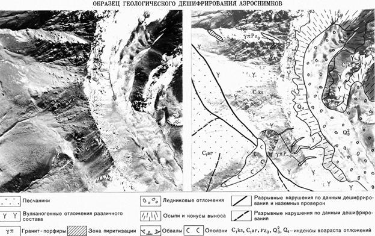
Рис. 13.10. Аэроснимок горного района.
Аэроснимок горного района: слева — с нормальным
фотоизображением местности, справа — с ослабленным, по фону которого в условных
знаках показаны: площади вулканогенных пород (расчлененный рисунок склонов
хребта), песчаников (гладкий рисунок плато), площади ледниковых отложений и
конусы выноса по долине, места обвалов и оползней, линии разрывов и др.
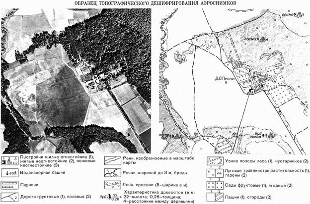
Рис. 13.10. Аэроснимок равнинного района.
Аэроснимок равнинного района: слева — с нормальным
фотоизображением местности, справа — с ослабленным , по фону которого в
условных знаках показаны: леса (зернистый рисунок), пашни на разной стадии
обработки (гладкий и полосчатый рисунок), дом отдыха со строениями и садами
(точечный рисунок) и др.
13.4. Формирование тематических карт по
результатам дешифрирования.
Тематическая карта - это и основной исследовательский
документ для ученого, и необходимое пособие при разработке проектов освоения
природных богатств, и средство познания окружающего нас мира. Большинство карт
в школьных атласах именно тематические. Они служат незаменимыми учебными
пособиями, по которым можно знакомиться с природными и общественными явлениями
на территории нашей Родины и всего мира.
При составлении тематических карт обязательно соблюдается
основное правило: изображаемое явление показывают более выразительно, а
общегеографические элементы - с меньшей степенью полноты и подробности по
сравнению с общегеографической картой. Содержание тематических карт постоянно
совершенствуется. В прошлом главная задача их заключалась в отображении
какого-либо явления физико-географического или социально-экономического
характера. В дальнейшем их начали составлять не только на основе материалов,
полученных непосредственно при съемках, но и путем соответствующей обработки и
обобщения разнообразной информации. Так появились карты по оценке природных и
трудовых ресурсов, карты прогнозирования различных явлений и др. В настоящее
время многие тематические карты составляют по материалам космических съемок.
В зависимости от
высоты полета спутника и типа установленной на нем аппаратуры космические
фотоснимки могут быть получены в разном масштабе, охватывать различные по
площади территории и отображать разные по размеру природные объекты. Снимки
разных масштабов несут неодинаковую информацию. Для изучения явлений,
протекающих на обширных территориях, используют глобальные и континентальные
снимки. Они дают такую информацию, которая не может быть получена другими
методами. Как выяснилось, на мелкомасштабном фотоизображении можно обнаружить
элементы глубинного строения Земли, нашедшие отражение в ландшафте ее
поверхности.
Космические
фотоснимки позволяют создавать мелкомасштабные тематические карты, минуя этапы
составления этих карт в крупных и средних масштабах. Обычный же путь
картографирования - от крупномасштабных к среднемасштабным и мелкомасштабным
картам предполагает большой объем дорогостоящих картографических работ. Кроме
того, в процессе уменьшения карт и обобщения содержания при переходе от
крупного масштаба к мелкому происходит некоторая потеря деталей и вкрадываются
отдельные неточности. Это - своего рода плата за картографическую
генерализацию. Космические снимки обширных пространств сразу могут быть
использованы для создания мелкомасштабных тематических карт. Изображение на них
получается уже обобщенным.
Тематическое
дешифрирование космических фотоснимков производится теми же методами, что и
топографическое, с помощью тех же приборов и инструментов, но с большей
степенью использования автоматизированных средств. Особое внимание при этом
уделяется косвенным дешифровочным признакам. Эти признаки основаны на имеющихся
в природе закономерных взаимосвязях размещения различных объектов.
Чаще всего эти взаимосвязи проявляются в двух основных
направлениях: приуроченности одних объектов к другим и изменении свойств одних
объектов в результате влияния на них других.
Чтобы дешифрировать какой-либо объект, нужно его
обнаружить и распознать. Обнаружение объекта - это непосредственное восприятие
его на снимке, а распознавание - определение его количественных и качественных
характеристик. Важно, чтобы дешифровщик был знаком с опознаваемыми объектами. В
этом случае выявление объекта проводится путем сравнения его изображения о
известным в натуре.
Космические фотоснимки позволяют составлять по ним
разнообразные тематические карты. Но особенно широкое применение они нашли при
составлении геологических карт. Обработка снимков для этих целей обычно ведется
в три этапа: предварительное камеральное дешифрирование, полевые работы и
окончательная камеральная обработка.
Предварительное камеральное дешифрирование проводят до
начала полевых работ. При этом составляют серии карт, на которых отображают
предполагаемые геологические структуры. На снимках разных масштабов выделяют
контуры объектов, зоны фоновых аномалий. На основе имеющегося картографического
материала строят предположения о геологической природе выявленных объектов и
устанавливают вероятность их опознавания на снимках.
Во время полевых работ уточняют данные, полученные со
снимков, выполняют полевое дешифрирование и ведут необходимые геологические
работы и наблюдения.
Завершающий этап - окончательная камеральная обработка
данных, полученных со снимков, и результатов наземных наблюдений. Затем по этим
данным составляют окончательный вариант карты.
Наиболее полную информацию о геологическом строении Земли
получают при дешифрировании цветных многозональных фотоснимков. По ним,
например, была уточнена и дополнена геологическая карта СССР масштаба
1:2500000, а также составлены или уточнены многие другие карты. Особый интерес
заслуживает сводная геологическая карта структур территории Советского Союза.
Она составлена в масштабе 1:5000000 по космическим снимкам, полученным в трех
зонах спектра и называется космогеологической.
При ее составлении работа велась в два этапа. На первом
этапе при дешифрировании снимков выделялись районы, общие по характеру рельефа.
Учитывая, что выделенные районы не всегда совпадают с принятыми в геологии, их
назвали космогеоструктурными. Следующим этапом стало изучение
космогеоструктурных районов. И вот здесь удалось дешифрировать большое
количество линейных объектов, представляющих собой особого вида разломы. От
граничных разломов они отличаются более строгим направлением и примерно
одинаковой плотностью по всей территории. По направлению четко выделяются
меридиональные, широтные и диагональные разломы.
Меридиональные секущие разломы прослеживаются с
интервалом 5-7° по долготе, сходясь в северном направлении и расходясь к
экватору. Это следы плоскостей, секущих земной шар параллельно оси его вращения.
На территории СССР насчитывается около двадцати таких разломов.
Широтные секущие разломы представляют собой следы
плоскостей, перпендикулярных к оси вращения Земли. Они расположены
неравномерно. Наиболее четко эти разломы проявляются на востоке, где отстоят
друг от друга на 3-4° по широте (на 300-500 км).
Диагональные секущие линейные структуры развиты на
территории СССР более равномерно. Они отстоят друг от друга на 300 - 500 км, но
простирание их не остается постоянным на всем протяжении.
Кроме космогеоструктурных площадей и линейных объектов на
космических снимках были обнаружены и перенесены на карту кольцевые объекты
диаметром от десятков до сотен километров. Анализ геологических материалов
позволил расшифровать геологическую природу части этих структур. Причина
образования другой части оказалась пока неясной. Две кольцевые структуры,
вероятно, связаны со следами падения крупных метеоритов в отдаленные
геологические эпохи.
Информация, показанная на космогеологической карте
принципиально новая и ранее не отображалась ни на каких других картах.
Выбранный для нее масштаб позволяет исследовать не только проблемы формирования
земной коры, но и закономерности размещения полезных ископаемых. Этому
способствует картографирование принципиально новых геологических форм, что
стало возможным лишь при использовании материалов космических съемок.
В последнее время космическая съемка находит широкое
применение при изучении шельфа - прибрежной части морского дна, наиболее
перспективной для освоения. Нужно отметить, что уже сегодня на шельфовую зону
приходится 20 - 25% всей мировой добычи газа и нефти.
Комплексное изучение шельфовой зоны северо-восточного
Каспия по фотоснимкам, полученным с космического корабля «Союз - 22», позволило
выявить характеристики рельефа дна, вид грунта, подводную растительность и
многое другое. В результате таких исследований составлена геологическая карта
шельфа, на которой с достаточной подробностью нанесены все данные необходимые
для изыскательских работ.
Впервые по космическим фотоснимкам составлена
геоморфологическая карта Южного Предбайкалья в крупном масштабе (1:400000). Она
служит основой для анализа приуроченности полезных ископаемых к рельефу и для
других исследований. В отличие от обычных способов составления
геоморфологических карт, картографирование выполнено не по отдельным формам
рельефа, а по их площадной совокупности.
По космическим фотоснимкам созданы многие другие
тематические карты: ландшафтов, лесов, почв, грунтов, грунтовых вод и т. п.
Практика изготовления их показывает высокую эффективность космических методов
картографирования. Подсчитано, например, что при создании почвенных и
кормоботанических карт в интересах сельского хозяйства сроки составления их по
сравнению с обычными способами сокращаются в 3 - 4 раза, а общие затраты - в 2
- 3 раза.
Материалы космической съемки используются также для
создания тематических карт краткосрочного пользования, например карт ледовой
обстановки. Их составляют упрощенным способом. Отобрав необходимые снимки на
заданную территорию, изготавливают из них фотомонтаж и на него наносят сетку
параллелей и меридианов. Такие карты создавались, например, на район дрейфа
дизель-электрохода «Михаил Сомов», зажатого в антарктических льдах. Это было в
июне-июле 1985 г. Положение корабля оказалось очень тяжелым. На помощь ему
подошел ледокол «Владивосток». Последняя карта ледовой обстановки, переданная
на борт ледокола, помогла кораблям выйти из ледового плена на чистую воду.
Для туристов создается много разных карт. Такие карты
часто называют схемами, потому что на них местность изображается с большими
обобщениями. А это создает значительные затруднения в ориентировании на
местности. Как же исключить такой недочет? Выход нашли: на туристских схемах
решили печатать фотоизображение местности, полученное путем фотографирования со
спутника. Получилась наглядная картина действительной местности, на которой
условными знаками выделены лишь основные объекты.